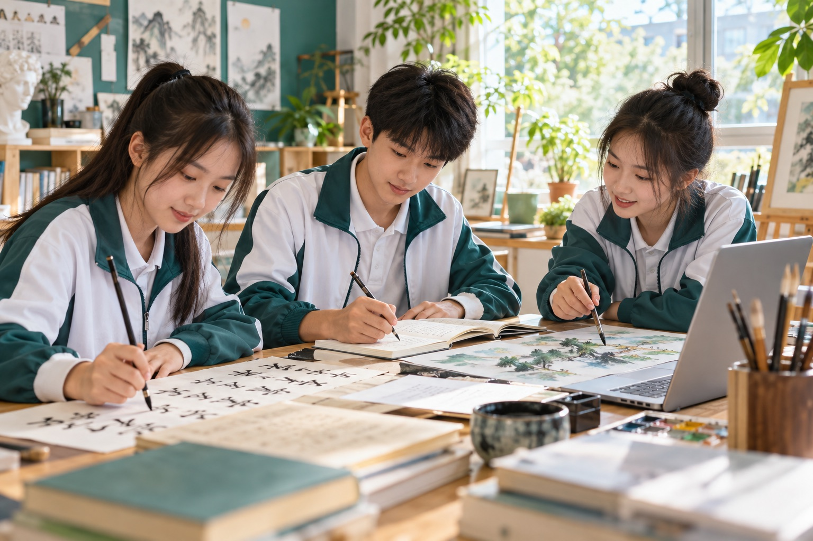

每天放学，我都会经过校门口那棵高大的梧桐树。树下有一个小小的旧书摊，摊主爷爷总戴着一副圆圆的眼镜，把每一本书擦得干干净净。
有一次下雨，我躲进他的塑料棚。爷爷递给我一本旧诗集，说：“书旧了，里面的世界不会旧。”从那天起，我总会停下来翻几页书，也慢慢认识了这个城市里安静又温暖的一角。
后来书摊搬走了，但梧桐叶落下时，我仍会想起那句话。也许阅读就是这样，让平凡的日子有了更长久的回声。
优秀学生作品展示

每天放学，我都会经过校门口那棵高大的梧桐树。树下有一个小小的旧书摊，摊主爷爷总戴着一副圆圆的眼镜，把每一本书擦得干干净净。
有一次下雨，我躲进他的塑料棚。爷爷递给我一本旧诗集，说：“书旧了，里面的世界不会旧。”从那天起，我总会停下来翻几页书，也慢慢认识了这个城市里安静又温暖的一角。
后来书摊搬走了，但梧桐叶落下时，我仍会想起那句话。也许阅读就是这样，让平凡的日子有了更长久的回声。